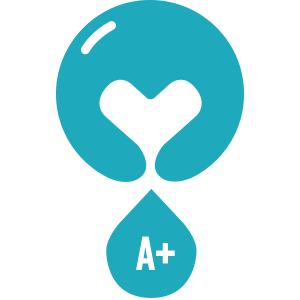
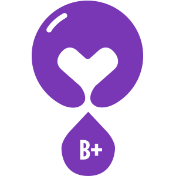
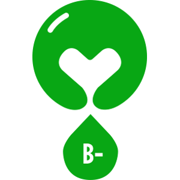
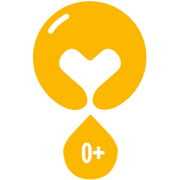
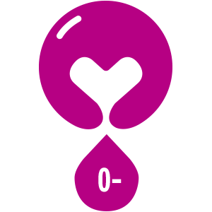
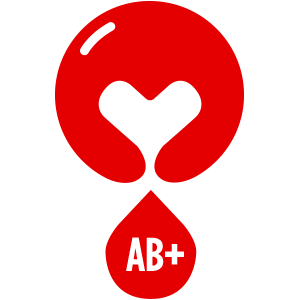
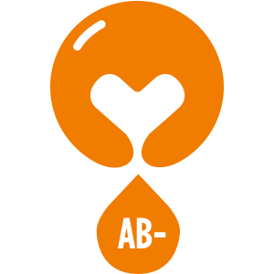

Zanimljive činjenice o doniranju krvi:
- 1. Jednoj od sedam osoba na bolničkom liječenju je potrebna krv.
- 2. U prosjeku svaka odrasla osoba ima između 4 i 6 litara krvi u organizmu.
- 3. Jedna jedinica krvi iznosi 450 ml.
- 4. Novorođena beba ima 250 do 300 ml krvi u organizmu.
- 5. A, B, O i AB su četri glavne krvne grupe kod čovjeka. AB krvna grupa je univerzalni primalac, a O krvna grupa je univerzalni davalac.
- 6. Prosječno vrijeme doniranja krvi iznosi 15 minuta.
- 7. Jedna jedinica krvi se može podijeliti na krvnu plazmu, eritrocite (crvena krvna zrnca), trombocite (krvne pločice) i leukocite (bijela krvna zrnca).
- 8. Eritrociti prenose kiseonik od pluća do ostalih organa.
- 9. U dvije ili tri kapi krvi se nalazi milijarda crvenih krvnih zrnaca.
- 10. Trombociti pomažu zgrušavanju krvi.
- 11. Krv i crvena krvna zrnca mogu da se upotrebe i do 42 dana nakon doniranja.
- 12. Krvne pločice (trombociti) mogu da se upotrebe najkasnije 5 dana od dana doniranja.
- 13. Pacijentima sa rakom i pacijentima sa operacijama na otvorenom srcu često je potrebna transfuzija trombocita da bi preživjeli.
- 14. Svaka odrasla zdrava osoba može donirati krv svakih 56 dana ili 2 mjeseca, ali je preporuka za muškarce doniranje svaka 3 mjeseca, a za žene 4 mjeseca.
- 15. Banke krvi najčešće potražuju doniranje O i B krvne grupe.